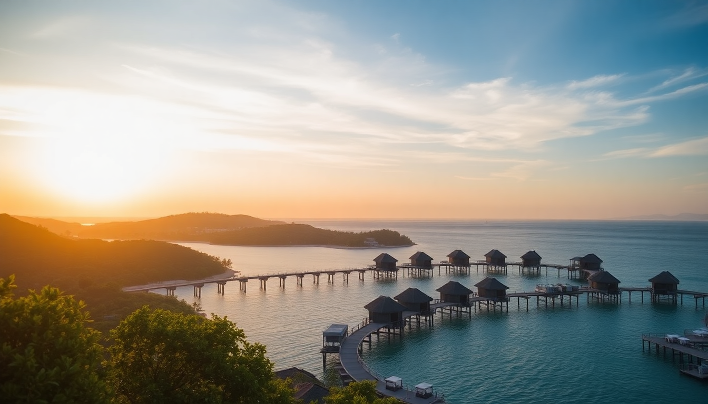

Best Time to Visit Maldives for Overwater Bungalows

I spent three weeks hopping between resorts in the North and South Male Atolls, and I learned fast that timing is everything in the Maldives. One month you’re staring at crystal-clear lagoons from your overwater bungalow; the next, you’re watching a monsoon hammer the deck. Here’s what I found about the seasons, so you can book the right month for your trip.
When is the dry season for overwater bungalows?
The dry season runs from December to April. This is the sweet spot for clear skies and calm seas. I stayed at Anantara Veli in January, and the water visibility was insane—I could see reef sharks from my bungalow steps without a mask. The wind dies down completely by February, so your overwater terrace feels like a private raft.
- December to February: Peak season. Expect blue skies, low humidity, and water temps around 28°C. Book Manta Point in North Male Atoll for manta ray sightings.
- March to April: Shoulder season. Still dry, but fewer crowds. I liked Sheraton Maldives Full Moon Resort in March for the quieter beaches.
- May: Transition month. Some rain, but prices drop. Risky for bungalows with open-air bathrooms.
What is the wet season like in the Maldives?
The wet season runs May to November, but it’s not a total washout. I visited in October and got three days of sun, two days of squalls. The rain usually hits in short bursts—enough to soak your towel but not ruin a trip. Overwater bungalows feel more enclosed during this time, so check if your resort has full-length glass walls.
- June to August: Southwest monsoon. Windy on the east side of atolls. I recommend South Male Atoll resorts like Cocoa Island by COMO because they’re sheltered.
- September to November: Transition period. Rain eases by November. Kurumba Maldives in Malé is a good fallback if you want quick access to the airport during bad weather.
- Humidity: Hits 80% in July. Air conditioning is non-negotiable in bungalows.
Which month has the best prices for overwater bungalows?
May and October offer the biggest discounts. I booked a week at Gili Lankanfushi in May for 40% less than January rates. The catch? You gamble on weather. In October, I paid $450 a night at Taj Exotica Resort & Spa in South Male Atoll, half the peak-season price. The rain came for two afternoons, but the empty lagoon made up for it.
- May: Lowest rates. Resorts like Huvafen Fushi drop prices by 30-50%.
- October: Second-cheapest. Good for budget-conscious travelers who don’t mind a few clouds.
- December to February: Highest prices. Expect $800+ a night for basic overwater villas.
Should I visit during the shoulder season?
Yes, if you want decent weather without the premium. March and November are my favorite months. In March, I stayed at Baros Maldives in North Male Atoll—the water was flat, the sun was hot, and the resort was half-empty. November is similar: the monsoon ends, but tourists haven’t arrived yet.
- March: Dry, less crowded. Try Naladhu Private Island for exclusivity.
- November: Rain risk is low by mid-month. Adaaran Select Hudhuranfushi in North Male Atoll has good deals then.
- Trade-offs: You might get a few overcast mornings, but the silence on the bungalow deck is worth it.
What about the Maldives during the low season?
Low season (June to August) is for surfers and divers, not bungalow loungers. I went in July and found the wind kicked up waves that slapped against the stilts of my bungalow at Cinnamon Dhonveli Maldives. The visibility dropped to 10 meters. That said, the reefs in South Male Atoll—like Kandooma Thila—are less crowded, and you can score a room at Fihalhohi Island Resort for under $200 a night.
- Pros: Cheap flights and rooms. Bandos Island Resort near Malé often has last-minute deals.
- Cons: Rough sea transfers. Avoid speedboats if you get seasick.
- Best for: Divers chasing manta rays at Manta Point from June to August.
How does the weather affect Malé and the atolls differently?
Malé is a transit hub, not a resort island, but its weather impacts your arrival. I landed in Malé during a November squall—the seaplane to North Male Atoll was delayed four hours. The city itself is hot year-round, with average temps of 30°C. The atolls vary: North Male Atoll gets more wind from the southwest monsoon, while South Male Atoll is calmer from June to August.
- Malé: Rain can flood streets. Hulhumalé has a beach but feels industrial.
- North Male Atoll: Best from December to April. Resorts like One&Only Reethi Rah face the open ocean.
- South Male Atoll: Sheltered during wet season. Veligandu Island has protected lagoons.
FAQ
What is the absolute worst month for overwater bungalows? July. I’ve been there. The southwest monsoon brings strong winds and sideways rain. Overwater bungalows feel like a boat in a storm. If you must go, pick a resort with a solid roof and windbreak walls—Kurumba Maldives in Malé is a safer bet because it’s on a small island with less exposure.
Can I visit the Maldives on a budget during peak season? Not really. Peak season rates at places like Sheraton Maldives Full Moon Resort start at $600 a night. I’d skip December to February if money is tight. Instead, aim for March or November—same weather, half the price at Cocoa Island by COMO.
Do I need travel insurance for the wet season? Yes. I didn’t have it in October, and a canceled seaplane cost me $300. Get a policy that covers weather delays and medical evacuation. The nearest hospital is in Malé, and getting there from South Male Atoll can take hours.
Conclusion
- Book December to April for guaranteed sun and calm lagoons at resorts like Anantara Veli and Baros Maldives.
- Save money by visiting in May or October, but expect rain at Gili Lankanfushi or Taj Exotica Resort & Spa.
- Avoid July and August for overwater bungalows unless you’re diving at Manta Point in North Male Atoll.
- Use Malé as a transit point only—stay in Hulhumalé if you need a cheap night before a seaplane.
- Always check the atoll’s exposure: South Male Atoll handles wet season better than North Male Atoll.